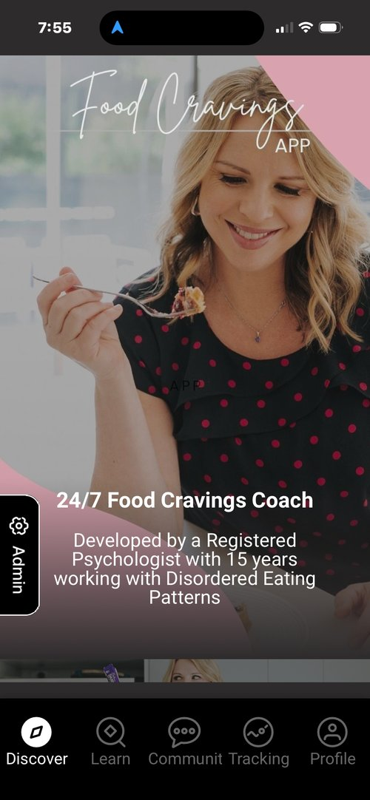
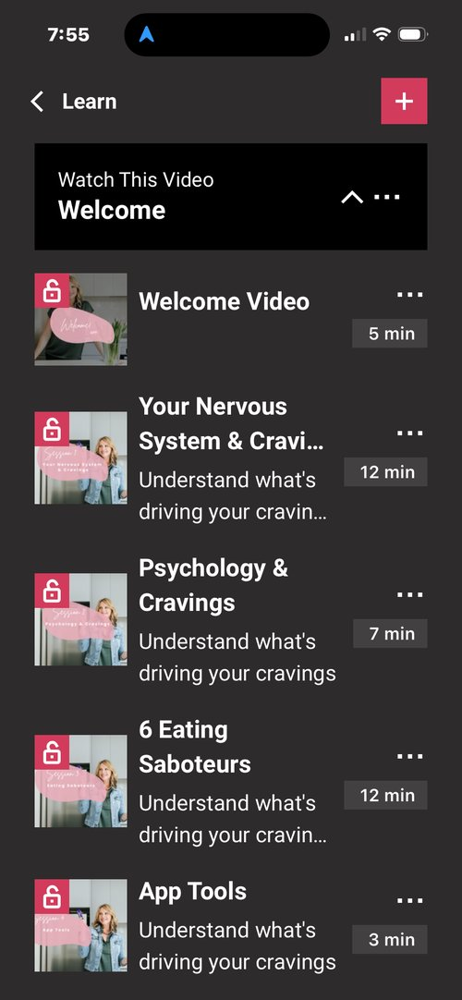
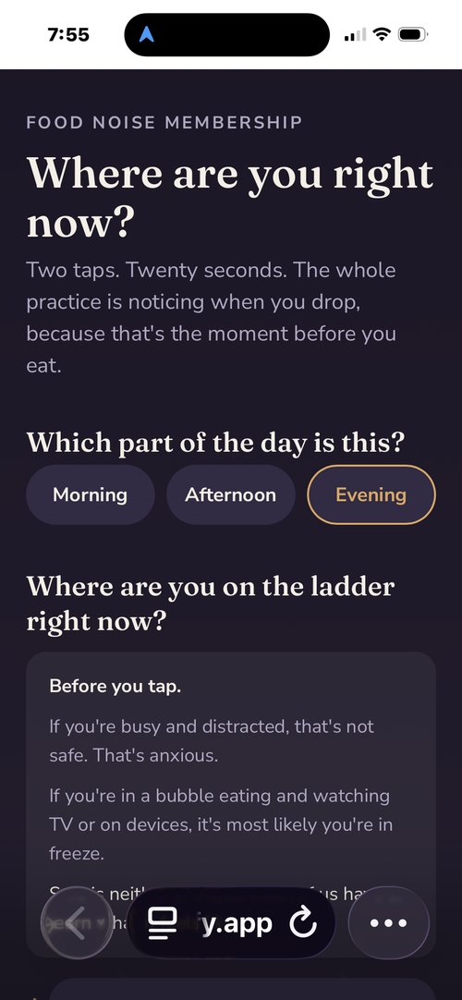
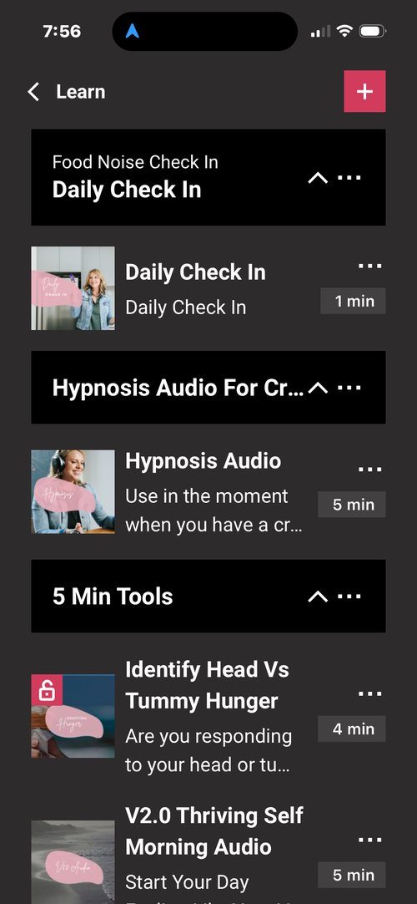

Is food noise consuming your mind?
As a Registered Psychologist & Eating Coach, food noise — the constant mental chatter about food — is one of the most exhausting and misunderstood patterns I see. This 2-minute assessment will help you discover which hypnosis audio is best suited to quietening yours.

I think about food even when I'm not hungry
This isn't about hunger. Food noise is a pattern your brain has learned — and like any pattern, it runs on autopilot. Most people spend years trying to think their way out of it. But the loop isn't happening in the part of your brain that responds to logic. It's much deeper than that.
Thoughts of food interrupt my focus at work, in conversations, or during activities I enjoy
When food keeps pulling your attention, it's usually not really about food. Your nervous system is looking for something — comfort, stimulation, a way to take the edge off. Food has just become the go-to. That's not a character flaw. It's a learned response. And learned responses can change.
I find myself eating not because I'm hungry, but because the thought of food won't go away
Eating to quiet the noise actually makes sense — it works, at least for a moment. The problem is it reinforces the pattern every single time. So the noise comes back louder. What actually breaks the cycle isn't more willpower. It's working with the part of your mind where the pattern was formed in the first place.
I feel like food has power over me
That feeling of food having power over you? It's telling you something important. It means the pattern isn't sitting in your conscious mind where you can just decide to change it. It's running underneath — in your subconscious. That's why no amount of planning or tracking ever quite reaches it. You need a different kind of tool.
I mentally plan, negotiate, or argue with myself about food throughout the day
That constant back-and-forth in your head — "just one," "I'll start Monday," "I've already ruined it" — is genuinely exhausting. And it's using up mental energy you need for everything else in your life. When the food noise quietens, most people are surprised by how much headspace they suddenly have. It's not just about eating. It changes everything.
Thoughts of food feel outside of my control — like a loop I can't switch off
That loop feeling is real — and it has nothing to do with willpower or discipline. It's a thought pattern that's been reinforced so many times it runs automatically. The reason it feels impossible to stop is because you're trying to stop it from the outside. Hypnosis works from the inside — at the level where the loop actually starts.
Food noise affects my mood, energy, or enjoyment of daily life
Almost there
Have you ever experienced hypnosis designed specifically for you — not a generic recording, but one made with your exact struggles and goals in mind?
The more personalised the hypnosis, the more effective it can be. Research shows hypnosis works best when suggestions are specific and targeted to the individual — not generic scripts. That's the difference between a recording made for everyone, and one made for you.
If your relationship with food feels distressing or out of control, please know support is available. In Australia, the Butterfly Foundation National Helpline offers free, confidential help on 1800 33 4673.
Do you have ADHD or suspect you might?
This helps us understand your relationship with food noise
Have you had weight loss surgery?
e.g. gastric sleeve, bypass or band — this doesn't affect your result, it just helps me tailor what I send you
Weight loss surgery changes your stomach — but food noise lives in your brain. Surgery restricts how much you can eat. It can't touch the thinking about food — the cravings, the head hunger, the mental chatter. Those come from your brain's reward and stress pathways, which is why so many people notice the noise creeping back 12–18 months after surgery, even when they're doing everything right. The surgery didn't fail, and neither did you. Food noise is a wiring problem — and what's wired in can be rewired.
Are you currently taking weight loss medication?
e.g. Ozempic, Wegovy, Mounjaro or similar GLP-1 medication
A lot of people on GLP-1 medication tell me the same thing — the physical hunger is quieter, but the pull toward food is still there. That's because a big part of food noise was never really about hunger. It's about habit, emotion, and patterns that formed long before the medication. The medication does its job. This does a different one.
Your results are ready.
Enter your email to see your results — plus get the link to the free Food Cravings App, with free tools you can start using today.
By entering your email you'll receive your results and updates from Georgie. Unsubscribe anytime.
Analysing your results…
Stop fighting your cravings — and start understanding them.
You already know what to eat. Kale good. Donuts... less good. (Probably. Maybe. Okay definitely.)
But knowing what to eat has never been the problem, has it? Because if it was, you'd have figured this out by now.
The real reason you're elbow-deep in a bag of chips at 10pm isn't hunger. And it's not willpower. It's something happening underneath the surface that no meal plan on earth is ever going to fix.
That's exactly what my free Food Cravings App unpacks for you.
Here's what you get when you download the free app below:
- A free video series that digs into the actual root cause behind your eating patterns (not the surface stuff everyone else talks about)
- A hypnosis audio taster that starts rewiring your relationship with food almost immediately
- Daily interactive check-ins that help you spot your eating patterns in real time so nothing sneaks up on you
- 5 minute tools you'll actually use — because who has more time than that?




This isn't another food plan. It's the missing piece underneath all the food plans you've already tried.